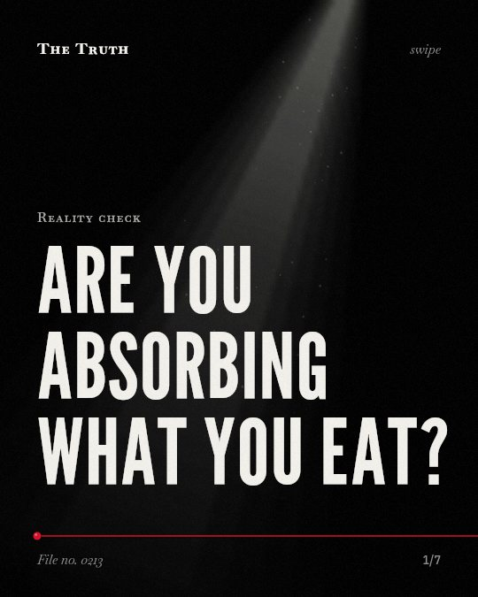

Reality check
Are you absorbing what you eat?

Plant foods contain components that inhibit nutrient absorption.
Factors like phytate, tannins, and oxalates can compromise how your body takes in essential micronutrients. This evidence is mixed regarding long-term effects.
Supported. At least one solid peer-reviewed study. The evidence is mixed.
What the research found
Processing can also induce leaching out of minerals and a reduced mineral bioaccessibility and bioavailability.
“Although processing can have a positive effect, it also can induce leaching out of minerals and a reduced mineral bioaccessibility and bioavailability.”
Review, 2019. Rousseau et al., Critical Reviews in Food Science and Nutrition.
Adequate consumption of plant foods cannot fulfill the human body’s total nutrient requirement.
“Despite these minerals, adequate consumption of plant foods cannot fulfill the human body’s total nutrient requirement.”
Review, 2021. Samtiya et al., Fermentation.
Diets predominantly vegetarian are composed of components that inhibit mineral bioavailability, and this inhibition is predominant.
“Diets predominantly vegetarian are composed of components that enhance as well as inhibit mineral bioavailability, the latter being predominant.”
Study, 2015. Platel & Srinivasan, Critical Reviews in Food Science and Nutrition.
Increases in Fe, Zn and Ca absorption have been reported in adults fed dephytinized cereals compared with cereals containing their native phytate.
“Increases in Fe, Zn and Ca absorption have been reported in adults fed dephytinized cereals compared with cereals containing their native phytate.”
Review, 2006. Gibson et al., Proceedings of The Nutrition Society.
Fruits such as mango and papaya, when consumed in combination with milk, provide significantly higher amounts of bioavailable β-carotene.
“Fruits such as mango and papaya, when consumed in combination with milk, provide significantly higher amounts of bioavailable β-carotene.”
Study, 2015. Platel & Srinivasan, Critical Reviews in Food Science and Nutrition.
Plant foods contain anti-nutritional factors like phytate, tannins, phenols, and oxalates that can compromise the bioavailability of several essential micronutrients.
“Plant foods also contain ample amounts of anti-nutritional factors such as phytate, tannins, phenols, oxalates, etc. These factors can compromise the bioavailability of several essential micronutrients in plant foods.”
Review, 2021. Samtiya et al., Fermentation.
The chemistry of a plant-based diet.
Predominantly vegetarian diets are composed of components that inhibit mineral bioavailability. While processing can reduce these factors, it can also leach out minerals.
What your meal actually provides.
You might be eating nutrient-dense foods that your body cannot fully access. That may be why specific culinary combinations and processing methods are necessary to improve bioavailability.
This part is our reading of the evidence, not a finding.
A morning bowl of cereal.
You pour milk over toasted grains. You assume your body is absorbing the iron and calcium from the bowl. The chemistry of the grain may be preventing that.
The honest summary
The evidence shows that plant-based diets face significant bioavailability challenges from anti-nutrients, but these can be mitigated through specific processing and culinary combinations.
The sources do not provide specific data on the long-term physiological decline of individuals on modern 'clean' diets.
Are you absorbing what you eat?
Sources
- Sofie Rousseau, Clare Kyomugasho, Miete Celus et al. (2019). Barriers impairing mineral bioaccessibility and bioavailability in plant-based foods and the perspectives for food processing. Critical Reviews in Food Science and Nutrition. Review, cited 247 times.
- Mrinal Samtiya, Rotimi Emmanuel Aluko, Anil Kumar Puniya et al. (2021). Enhancing Micronutrients Bioavailability through Fermentation of Plant-Based Foods: A Concise Review. Fermentation. Review, cited 214 times.
- Rosalind Susan Gibson, Leah Perlas, Christine S. Hotz (2006). Improving the bioavailability of nutrients in plant foods at the household level. Proceedings of The Nutrition Society. Review, cited 271 times.
- Kalpana Platel, Krishnapura Srinivasan (2015). Bioavailability of Micronutrients from Plant Foods: An Update. Critical Reviews in Food Science and Nutrition. Study, cited 197 times.
Also read for this file, not quoted
- Rodríguez et al. (2020). Healthy and Resilient Cereals and Pseudo-Cereals for Marginal Agriculture: Molecular Advances for Improving Nutrient Bioavailability.
- Sierralta et al. (2026). Dietary Patterns, Micronutrient Adequacy, and Metabolic Vulnerability in Alzheimer's Disease: A Critical Narrative Review.
This file was researched and drafted by software, then checked by rules a model cannot talk its way around: each quote above was matched word for word against the paper, and every number had to appear in it. How files are made.